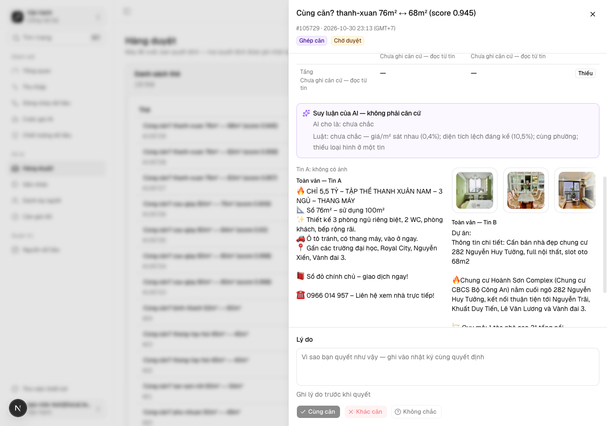

Người duyệt vai ops trên cloud thấy ảnh của tin S06 trên thẻ ghép căn, ảnh đi qua máy chủ chứ không lộ URL nguồn
docs/superpowers/specs/2026-10-31-anh-goc-qua-may-chu-design.md
| Eval | Tiêu chí | Loại | Verdict | run_id | verified_at |
|---|---|---|---|---|---|
| E1 | AC-1 | test | PASS | minted-anh-goc-qua-may-chu-E1-r1 | 2026-10-30T23:43:39Z |
| E2 | AC-2 | test | PASS | minted-anh-goc-qua-may-chu-E2-r1 | 2026-10-30T23:43:39Z |
| E3 | AC-3 | test | PASS | minted-anh-goc-qua-may-chu-E3-r1 | 2026-10-30T23:43:39Z |
| E4 | AC-4 | test | PASS | minted-anh-goc-qua-may-chu-E4-r1 | 2026-10-30T23:43:39Z |
| E5 | AC-5 | test | PASS | minted-anh-goc-qua-may-chu-E5-r1 | 2026-10-30T23:43:39Z |
| E6 | AC-6 | test | PASS | minted-anh-goc-qua-may-chu-E6-r1 | 2026-10-30T23:43:39Z |
| E7 | AC-7 | test | PASS | minted-anh-goc-qua-may-chu-E7-r1 | 2026-10-30T23:43:39Z |
| E8 | AC-8 | script | PASS | minted-anh-goc-qua-may-chu-E8-r1 | 2026-10-30T23:43:39Z |
| E9 | AC-8 | script | PASS | minted-anh-goc-qua-may-chu-E9-r1 | 2026-10-30T23:43:39Z |
| E10 | AC-9 | ui-check | PASS | minted-anh-goc-qua-may-chu-E10-r1 | 2026-10-30T23:43:39Z |
AC-1: Given dòng `media` có `media_key` và chỉ có `media_url`, When phiên vai Vận hành gọi `GET /api/zalo-media?media=<khoá>` với bộ lấy ảnh giả trả ảnh hợp lệ, Then phản hồi 200 mang đúng byte và `content-type` ảnh, và thân, header phản hồi không chứa URL hay tên máy gốc.
cd app && node --import tsx --test tests/anh-goc-qua-may-chu.test.tsx ℹ duration_ms 1302.191292
AC-2: Given ma trận 5 vai (khách, user, viewer, ops, admin) × 3 khoá (chỉ URL gốc, có `local_file`, không tồn tại), When gọi `?media=`, Then chỉ ops và admin nhận ảnh cho hai khoá có thật; mọi ô còn lại 404; khách, user, viewer không chạm DB hay mạng.
cd app && node --import tsx --test tests/anh-goc-qua-may-chu.test.tsx ℹ duration_ms 1302.191292
AC-3: Given khoá sai khuôn, khoá không có dòng, hay DB không có bảng `media` (cloud), When gọi `?media=`, Then 404, không gọi mạng.
cd app && node --import tsx --test tests/anh-goc-qua-may-chu.test.tsx ℹ duration_ms 1302.191292
AC-4: Given ma trận lỗi nguồn viết trước một-một từ bảng chặn của design doc — URL `http:`; tên máy phân giải ra địa chỉ riêng, loopback, link-local IPv4, IPv6 (fc00::/7, fe80::/10, ::1) và `::ffff:` ánh xạ; chuyển hướng tới địa chỉ riêng; quá 3 chuyển hướng; nguồn trả mã không phải 2xx; `content-type` không phải ảnh; quá 8 MB khai trước; quá 8 MB khi đếm lúc đọc; quá 8 giây — When lấy ảnh, Then mỗi ô bị chặn đúng mã của bảng và thân phản hồi không chứa URL hay tên máy. (cross-layer)
cd app && node --import tsx --test tests/anh-goc-qua-may-chu.test.tsx ℹ duration_ms 1302.191292
AC-5: Given thẻ ghép căn có bên S06 chỉ có URL gốc, When loader ảnh thẻ chạy cho vai Vận hành và Quản trị, Then mỗi bên nhận ảnh `origin: "proxy"` với `src` dạng `/api/zalo-media?media=<khoá>`, `chiGoc` không đếm các ảnh ấy, ảnh mẫu `evidence.image_url` không có trong kết quả, và JSON trả về không chứa tên máy nào của `media_url` hay `evidence.image_url`. (cross-layer)
cd app && node --import tsx --test tests/anh-goc-qua-may-chu.test.tsx ℹ duration_ms 1302.191292
AC-6: Given dòng `media` có `local_file` hợp lệ, When gọi `?media=`, Then phục vụ file local qua cùng hai lớp kiểm đường của chế độ `?snapshot=`, không gọi mạng.
cd app && node --import tsx --test tests/anh-goc-qua-may-chu.test.tsx ℹ duration_ms 1302.191292
AC-7: Given DB máy thu thật (chỉ đọc) và một tin S06 có dòng `media`, When dựng dải ảnh thẻ cho vai Vận hành, Then có ≥ 1 ảnh `proxy` và HTML dải ảnh không chứa tên máy nào của các `media_url` của tin ấy; mọi `media_key` S03/S05/S06 đúng khuôn 32 hex và mọi `media_url` là `https`. (cross-layer)
cd app && node --import tsx --test tests/anh-goc-doi-chieu.test.tsx ℹ duration_ms 384.073625
AC-8: Given sổ bề mặt API và bộ kiểm cổng, When chạy `check-api-surface.mjs static` và `check-portal-compliance.mjs`, Then xanh; ghi chú dòng `zalo-media` nêu chế độ `?media=` cho vai Vận hành trở lên; mục 6 có chiều đỏ cho bản route gọi bộ lấy ảnh trước khi kiểm vai.
node scripts/check-api-surface.mjs static api-surface static: ĐẠT
AC-8: Given sổ bề mặt API và bộ kiểm cổng, When chạy `check-api-surface.mjs static` và `check-portal-compliance.mjs`, Then xanh; ghi chú dòng `zalo-media` nêu chế độ `?media=` cho vai Vận hành trở lên; mục 6 có chiều đỏ cho bản route gọi bộ lấy ảnh trước khi kiểm vai.
node scripts/check-portal-compliance.mjs portal-compliance: ĐẠT
AC-9: Given dev server máy thu, When người chấm mở `/ops/review` một thẻ có bên S06 bằng tài khoản thử vai Vận hành, Then dải ảnh bên S06 hiện ảnh thật và toàn bộ mã trang (kể cả dữ liệu nhúng của trang) không chứa tên máy nào của `media_url` hay `evidence.image_url` của thẻ ấy (tập tên máy lấy từ DB).

chưa ghi quan sát production